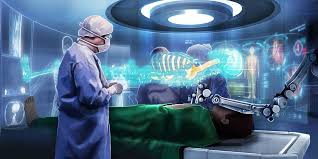
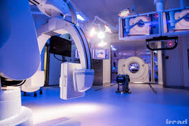
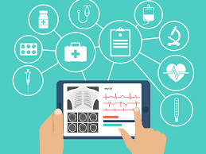

Qu'est ce que l' E-médecine ?
C'est une forme de pratique médicale s'appuyant fortement sur le numérique, l'internet, le Web 2.0 et sur les robots médicaux, permise par le développement depuis la fin du XXe siècle des techniques de l'informatique médicale.

Qu'est ce que l'E-santé ?
L’E-santé ou santé numérique fait référence à l’application des technologies de l’information et de la communication à l’ensemble des activités en rapport avec la santé.


Pourquoi utiliser le numérique en médecine ? Quels sont les objectifs ?
Le numérique offre l’opportunité de bien protéger les patients, le personnel soignant et leurs données.
L’objectif est de faciliter le travail des professionnels de santé avec le numérique au niveau de la prise en charge du patient. Parmi les solutions déjà
développées en e-santé : la visioconférence permet un accès au soin plus facile grâce aux tablettes, PC et bien entendu smartphone.
A l'hôpital, des solutions technologiques permettent d’optimiser le parcours du patient et du soignant dans l’hôpital connecté (accueil personnalisé du
patient, les objets connectés télé-vigilance type prévention de chute). Le partage d’information au sein et à l’extérieur de l’établissement est développé
notamment grâce à l’imagerie médicale partagée qui permet le stockage et l’archivage des données d’imagerie.
Le numérique peut réellement apporter des réponses visant à faciliter la vie des patients, qu’il s’agisse de l’accompagnement des personnes âgées, des maladies
chroniques ou de la médecine ambulatoire. Les technologies digitales de l’information permettent d’optimiser les pratiques tout en assurant la qualité et la sécurité des données. Leur rôle est essentiel dans l’amélioration des dispositifs de santé. La télémédecine nécessite une adaptation des constructeurs de matériel médical, de même que le besoin d’accompagnement du patient incite les industries pharmaceutiques à déployer des systèmes de suivi.
La maîtrise de ces évolutions est essentielle pour le milieu médical qui doit opérer rapidement sa transition numérique, afin de mieux comprendre l’univers des objets connectés, percevoir les opportunités d’application et définir des stratégies de protection.
L'utilisation de robots dans le médical est un système qui pourrait être plus précis dans le cadre d'une application thérapeutique, par exemple lors d'une chirurgie ou au cours d'un programme de réhabilitation neuromotrice.